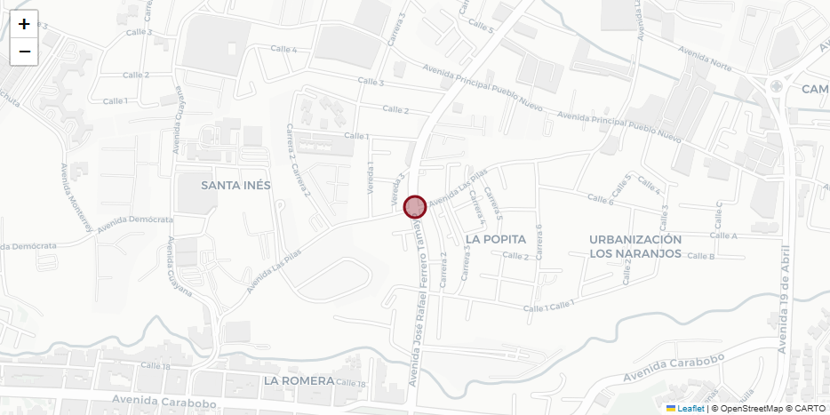
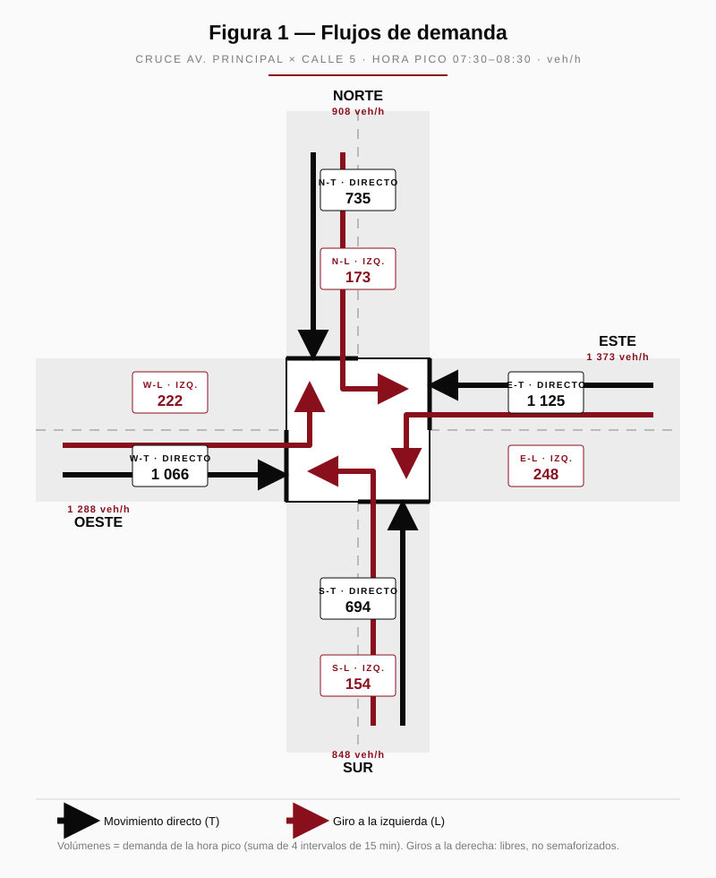
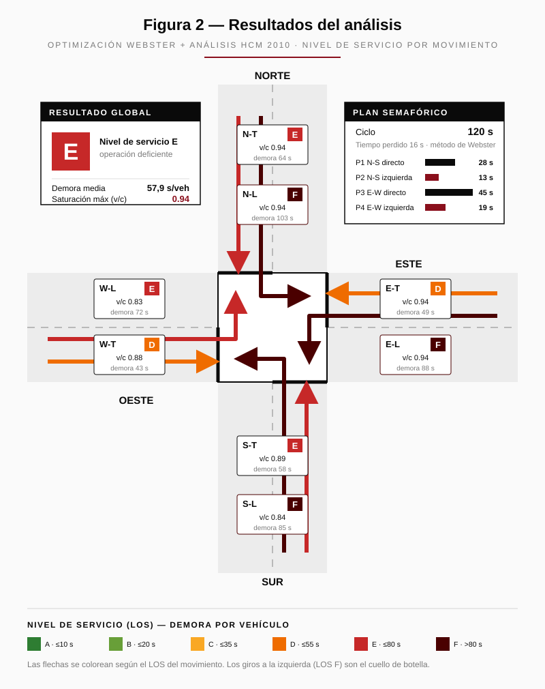
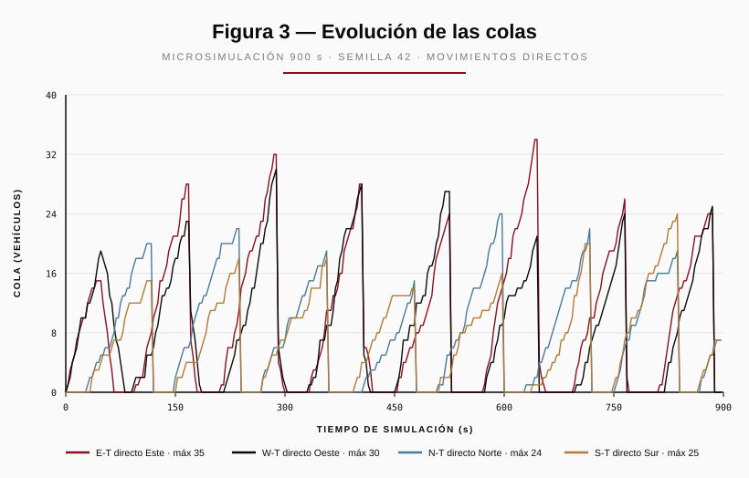

Cruce Av. Principal × Calle 5 — periodo pico matutino
| Intersección | Av. Principal × Calle 5 (4 accesos semaforizados) |
| Coordenadas | 7.780639, −72.221870 |
| Tipo de estudio | Aforo direccional de movimientos de giro |
| Fecha del aforo | Jueves 30 de abril de 2026 |
| Periodo observado | 07:00 – 09:00 h · intervalos de 15 min |
| Hora pico identificada | 07:30 – 08:30 h |
| Métodos aplicados | Webster (1958) · HCM 2010 cap. 18 · microsimulación |
| Herramienta | Traffic Intersection Optimizer v0.1 |
| Fecha del informe | 20 de mayo de 2026 |
ejemplo-aforo-cruce-av-principal.json). Cifras calculadas por el
motor de análisis; reproducibles importando dicho archivo.La intersección Av. Principal × Calle 5 opera en hora pico matutina con un nivel de servicio global E (operación deficiente) y una saturación máxima de v/c = 0,94. Aun con el plan de tiempos optimizado por el método de Webster, la demora media alcanza 57,9 s/veh y los cuatro movimientos de giro a la izquierda operan en el límite o por encima de su capacidad.
El eje Este–Oeste concentra el tránsito (2 661 veh/h entrantes frente a 1 756 veh/h del eje Norte–Sur) y constituye el movimiento crítico. Los giros a la izquierda son el cuello de botella: tres de ellos (N-L, S-L, E-L) operan en nivel de servicio F. El análisis de escenarios indica que un incremento de apenas +10 % de demanda sobresatura la intersección (v/c = 1,03). En consecuencia, la optimización de tiempos por sí sola es insuficiente en el horizonte de proyecto y debe acompañarse de medidas de capacidad y de gestión de demanda (ver sección 12).
Intersección en cruz de cuatro accesos semaforizados (Norte, Sur, Este, Oeste). Cada acceso dispone de un grupo de carriles directo (2 carriles) y un grupo exclusivo de giro a la izquierda (1 carril). Los giros a la derecha son libres (no semaforizados) y no se incluyen en el análisis de tiempos.

Plano de ubicación — coordenadas 7.780639, −72.221870 (© OpenStreetMap · © CARTO)
| Acceso | Grupo | Movimiento | Carriles | Sat. base (veh/h/carril) |
|---|---|---|---|---|
| Norte | N-T | Directo | 2 | 1 900 |
| Norte | N-L | Giro izquierda | 1 | 1 900 |
| Sur | S-T | Directo | 2 | 1 900 |
| Sur | S-L | Giro izquierda | 1 | 1 900 |
| Este | E-T | Directo | 2 | 1 900 |
| Este | E-L | Giro izquierda | 1 | 1 900 |
| Oeste | W-T | Directo | 2 | 1 900 |
| Oeste | W-L | Giro izquierda | 1 | 1 900 |
| Fase | Nombre | Grupos con verde | Verde mín. | Verde máx. | Amarillo | Todo-rojo |
|---|---|---|---|---|---|---|
P1 | N-S directo | N-T, S-T | 7 s | 60 s | 3 s | 1 s |
P2 | N-S izquierda | N-L, S-L | 7 s | 25 s | 3 s | 1 s |
P3 | E-W directo | E-T, W-T | 7 s | 60 s | 3 s | 1 s |
P4 | E-W izquierda | E-L, W-L | 7 s | 25 s | 3 s | 1 s |
d = d1·PF + d2, capacidad, grado de saturación v/c, cola al
95-percentil y nivel de servicio (LOS A–F).PCU = 1 + %pesados (equivalencia camión = 2,0). La demanda de diseño
que utiliza el modelo es demanda = conteo × PCU ÷ PHF.Vehículos contados por movimiento, en intervalos de 15 minutos.
L = giro a la izquierda; T = movimiento directo.
| Intervalo | N-L | N-T | S-L | S-T |
|---|---|---|---|---|
| 07:00 – 07:15 | 35 | 150 | 30 | 140 |
| 07:15 – 07:30 | 40 | 165 | 34 | 152 |
| 07:30 – 07:45 | 42 | 180 | 38 | 170 |
| 07:45 – 08:00 | 46 | 195 | 41 | 182 |
| 08:00 – 08:15 | 44 | 185 | 39 | 176 |
| 08:15 – 08:30 | 41 | 175 | 36 | 166 |
| 08:30 – 08:45 | 36 | 155 | 32 | 148 |
| 08:45 – 09:00 | 32 | 140 | 28 | 132 |
| Intervalo | E-L | E-T | W-L | W-T |
|---|---|---|---|---|
| 07:00 – 07:15 | 48 | 210 | 42 | 200 |
| 07:15 – 07:30 | 55 | 245 | 49 | 232 |
| 07:30 – 07:45 | 60 | 270 | 54 | 258 |
| 07:45 – 08:00 | 66 | 295 | 59 | 278 |
| 08:00 – 08:15 | 63 | 285 | 56 | 270 |
| 08:15 – 08:30 | 59 | 275 | 53 | 260 |
| 08:30 – 08:45 | 52 | 240 | 46 | 228 |
| 08:45 – 09:00 | 46 | 210 | 40 | 198 |
Vehículos pesados (buses/camiones, contados aparte): N-T 6 % · N-L 3 % · S-T 6 % · S-L 3 % · E-T 12 % · E-L 8 % · W-T 11 % · W-L 7 %.
Sumando los ocho movimientos por intervalo y aplicando una ventana móvil de cuatro intervalos, la hora de máxima demanda resulta 07:30 – 08:30, con un volumen total de 4 417 veh/h.
| Ventana (1 hora) | Volumen total (veh/h) |
|---|---|
| 07:00 – 08:00 | 4 061 |
| 07:15 – 08:15 | 4 324 |
| 07:30 – 08:30 | 4 417 — máxima |
| 07:45 – 08:45 | 4 282 |
PHF = V / (4 × volumen del intervalo de 15 min más alto) PHF = 4 417 / (4 × 1 162) = 4 417 / 4 648 = 0,95
Demanda de la hora pico (suma de los cuatro intervalos 07:30–08:30) y factor PCU por contenido de vehículos pesados:
| Grupo | Conteo hora pico (veh/h) | PCU | Grupo | Conteo hora pico (veh/h) | PCU |
|---|---|---|---|---|---|
N-T | 735 | 1,06 | E-T | 1 125 | 1,12 |
N-L | 173 | 1,03 | E-L | 248 | 1,08 |
S-T | 694 | 1,06 | W-T | 1 066 | 1,11 |
S-L | 154 | 1,03 | W-L | 222 | 1,07 |

Figura 1 — Flujos de demanda de la hora pico (veh/h)
La representación confirma que el eje Este–Oeste soporta la mayor carga (E-T 1 125 y W-T 1 066 veh/h en los movimientos directos), casi un 50 % por encima de los directos del eje Norte–Sur.
Aplicando el método de Webster a la demanda de diseño se obtiene un ciclo de 120 segundos (valor máximo admisible: la intersección se encuentra próxima a la saturación) con un tiempo perdido total de 16 s por ciclo.
| Fase | Movimientos | Verde efectivo | Amarillo | Todo-rojo |
|---|---|---|---|---|
P1 N-S directo | N-T, S-T | 27,6 s | 3 s | 1 s |
P2 N-S izquierda | N-L, S-L | 12,6 s | 3 s | 1 s |
P3 E-W directo | E-T, W-T | 44,7 s | 3 s | 1 s |
P4 E-W izquierda | E-L, W-L | 19,0 s | 3 s | 1 s |
El reparto asigna el verde más largo a la fase E-W directo (P3), coherente con la mayor demanda de ese eje. Las fases de giro a la izquierda (P2 y P4) alcanzan el límite de su asignación.
| Grupo | Fase | Demanda dis. | Capacidad | v/c | Demora (s) | Cola 95 % (veh) | LOS |
|---|---|---|---|---|---|---|---|
N-T | P1 | 820 | 874 | 0,94 | 64 | 53,7 | E |
N-L | P2 | 188 | 200 | 0,94 | 103 | 12,4 | F |
S-T | P1 | 774 | 874 | 0,89 | 58 | 49,9 | E |
S-L | P2 | 167 | 200 | 0,84 | 85 | 10,9 | F |
E-T | P3 | 1 326 | 1 416 | 0,94 | 49 | 85,2 | D |
E-L | P4 | 282 | 301 | 0,94 | 88 | 18,6 | F |
W-T | P3 | 1 246 | 1 416 | 0,88 | 43 | 77,5 | D |
W-L | P4 | 250 | 301 | 0,83 | 72 | 16,2 | E |
Resultado global: demora media de 57,9 s/veh, nivel de servicio
E y saturación máxima v/c = 0,94. La columna
«Demanda dis.» corresponde a la demanda de diseño conteo × PCU ÷ PHF.

Figura 2 — Nivel de servicio por movimiento y plan semafórico
Simulación de 900 s (15 min) con llegadas de Poisson y semilla 42. De 1 235 vehículos generados se sirvieron 1 208 (97,8 %); las colas son extensas pero todavía se disipan dentro del periodo analizado.
| Grupo | Llegados | Servidos | Espera media (s) | Cola máxima (veh) |
|---|---|---|---|---|
E-T | 322 | 322 | 26,5 | 35 |
W-T | 301 | 301 | 25,2 | 30 |
S-T | 196 | 188 | 31,1 | 25 |
N-T | 206 | 199 | 34,1 | 24 |
E-L | 64 | 61 | 48,5 | 10 |
W-L | 59 | 53 | 40,5 | 9 |
N-L | 47 | 46 | 55,7 | 8 |
S-L | 40 | 38 | 51,1 | 8 |

Figura 3 — Evolución de la cola en los movimientos directos durante la simulación
El patrón en diente de sierra refleja el ciclo del semáforo: la cola crece durante el rojo y se descarga durante el verde. En los movimientos directos del eje Este–Oeste las colas alcanzan de 30 a 35 vehículos antes de cada descarga; las del eje Norte–Sur se mantienen entre 24 y 25. Los giros a la izquierda (no graficados) no superan los 10 vehículos, pero con esperas unitarias más altas (50–56 s), confirmando el diagnóstico del análisis HCM: la mayor demora la sufren los giros, mientras que las colas más largas se forman en los directos.
Se reoptimizó el plan de tiempos para distintos niveles de demanda, a fin de evaluar la sensibilidad de la intersección al crecimiento del tránsito.
| Escenario | Factor | Ciclo | Demora media | v/c máx | LOS |
|---|---|---|---|---|---|
| Valle (mediodía) | 0,65× | 61 s | 28 s | 0,74 | C |
| Hora pico AM (aforo actual) | 1,00× | 120 s | 58 s | 0,94 | E |
| Proyección +10 % (3 años) | 1,10× | 120 s | 75 s | 1,03 | E |
| Proyección +25 % (horizonte) | 1,25× | 120 s | 119 s | 1,18 | F |
Con un crecimiento de tan solo +10 % la intersección sobrepasa su capacidad (v/c = 1,03) y comienza a acumular colas residuales que no se disipan ciclo a ciclo. En el horizonte de proyecto (+25 %) la operación colapsa a nivel de servicio F con demoras de casi dos minutos por vehículo.
ejemplo-aforo-cruce-av-principal.json en la
aplicación y ejecutando «Optimizar y analizar».